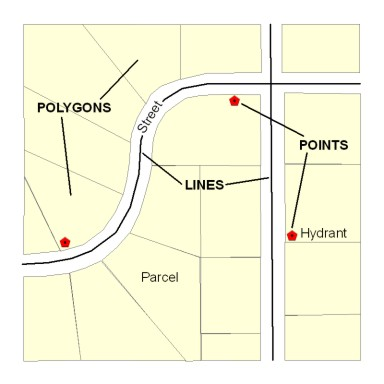
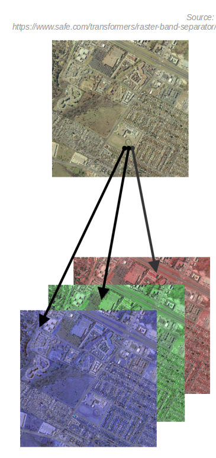

UAS data
What do we get after the flight mission?

Digital imagery

- usually on the camera SD card
- can be geotagged (depends on camera)
- Camera lens location is "written into" each photo's EXIF file
- this is not necessary the case...
Flight log
- Onboard Inertial Measurement Unit (IMU) accurately measure the orientation of airborne sensors,
- Information is logged into a text file (flight log),
- Contains elements of exterior orientation

GCP coordinates
- Measured by GPS coordinates of the panels set before the fight
- Photo ID points (distinguishabe ground features)can be surveyed later on
- It is improtant to know the GCPs coorditate system (spatial reference system)
Spatial reference system
- defines, with the help of coordinates, how the two-dimensional, projected map in your GIS is related to real places on the earth
- It is crucial to know what is your data reference system!
- There are global map projections, but most map projections are created and optimized to project smaller areas of the earth’s surface
- There are two different types of coordinate reference systems: Geographic Coordinate Systems and Projected Coordinate Systems
- Spatial reference list (EPSG codes)
Vector data
- comprised of vertices and paths, not made up of a grid of pixels
- three basic types: points, lines and polygons (areas)
- can store attributes

Raster data
- made up of pixels (also referred to as grid cells)
- each pixel has only one value
- image has a red, green and blue (RGB) value
- each value in an elevation map represents a specific height

Raster vs. vector data
RASTER
- + map algebra with raster data is usually quick and easy to perform
- + quantitative analysis is intuitive
- - can have a pixelated look and feel
- - cannot create network datasets or perform topology rules on rasters
- - no attribute tables
- - large data size with high resolution rasters
VECTOR
- + graphical output is generally more aesthetically-pleasing
- + network analysis and proximity operations use vector data structures
- - in order to display continuous data as a vector, it would require substantial generalization
- - with a lot of features, vector manipulation algorithms are complex
Raster vs. vector data
- Do you want to work with pixels or coordinates? Raster data works with pixels. Vector data consists of coordinates
- What is your map scale? Vectors can scale objects up to the size of a billboard. But you don’t get that type of flexibility with raster data
- Do you have restrictions for file size? Raster file size can result larger in comparison with vector data sets with the same phenomenon and area.
UAS data processing outputs
What do we get after processing the data?

Orthophoto
- aerial photograph or image geometrically corrected ("orthorectified") such that the scale is uniform: the photo has the same lack of distortion as a map
- raster: consistis of red, green and blue bands
Digital Surface Model

- DEM/DTM - Digital Elevation Model / Digital Terrain Model
- representation of a terrain's elevation
- bare-earth raster grid
- DSM - Digital Surface Model
- representation of a visible surface
- captures the natural and built features on the Earth’s surface
UAS data processing outputs
What do we get after processing the data?
Pointcloud
- representation of the external surface of an object
- set of vertices in a three-dimensional coordinate system
- vector or raster?
- Dale Lutz once said, "point cloud is a badly behaved raster"
- in GIS, point cloud geometry is often known, rather mistakenly, as LiDAR